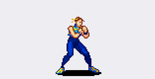
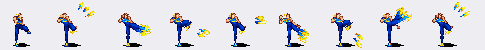
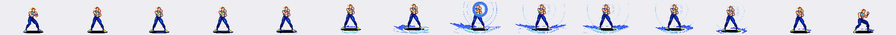

| Fila | GIF | Animación | Figuras | y en la hoja | Nota |
|---|---|---|---|---|---|
| 1–3 |  |
Stance un solo bucle, filas 1 + 2 + 3 |
23 figuras → 22 frames |
7–219 | Las tres franjas seguidas: fila 1 (10 figuras) → fila 2 (6) → fila 3 (7). En la hoja son 23; se publican 22 porque la figura 1 de la fila 2 es idéntica píxel a píxel a la figura 10 de la fila 1 (la costura). |
| 04 |  |
Caminar adelante torso +3,8 px | 12 | 226–293 | Torso inclinado hacia delante. |
| 05 |  |
Caminar atrás torso −0,0 px | 12 | 299–366 | Torso más recto: así se distingue de la 4. |
| 06 |  |
Patada fuerte | 7 | 375–440 | Pierna por encima de la cadera. |
| 07 |  |
Puño fuerte | 6 | 444–503 | Brazo extendido al frente. |
| 08 |  |
Puño débil | 6 | 509–573 | Más corto que el fuerte. |
| 09 |  |
Patada débil | 5 | 586–649 | Rodilla y extensión corta. |
| 10 |  |
Especial ↓ ↓↘ → + patada | 7 | 657–736 | Patada girada con efecto. |
| 11 |  |
Especial proyectil | 3 | 749–806 | El proyectil no está dibujado: usar la chispa de Voltia. |
| 12 |  |
Speed kick poses + estelas en el frame |
9 poses 9 estelas |
827–911 | Cada estela va dentro del frame, a la derecha del sprite, en el desfase que tiene en la hoja. Las dos que van sueltas (x 254–276 y x 339–359) van con la pose de su izquierda, que es la que las genera. |
| 13 |  |
Salto en el sitio | 10 | 926–1047 | Pies fuera del suelo y vuelta. |
| 14 |  |
Salto adelante | 11 | 1068–1214 | Invertido = salto atrás. |
| 15 |  |
Patada adelante-abajo + voltereta | 13 | 1225–1369 | Sube por el pecho y cae con voltereta. |
| 16 |  |
Salto + puño | 11 | 1383–1514 | Misma animación para débil y fuerte. |
| 17 |  |
Salto + patada | 10 | 1524–1659 | Misma animación para débil y fuerte. |
| 18 |  |
Puño fuerte agachada | 12 | 1686–1743 | Los frames de pie sirven de transición. |
| 19 |  |
Patada fuerte agachada | 6 | 1767–1815 | Sale desde el suelo. |
| 20 |  |
Patada débil agachada | 5 | 1832–1879 | Extensión corta. |
| 21 |  |
Puño débil agachada | 6 | 1888–1936 | Golpe corto. |
| 22–23 |  |
Defensa / onda de choque + super una sola animación |
8 + 6 = 14 → 14 frames |
1942–2157 | Las filas 22 y 23 seguidas, todos los frames, sin quitar ninguno. La onda de los golpes grandes y la esfera del super no están dibujadas. |
| 24 |  |
Derribo y recuperación | 11 | 2182–2321 | Frames según la altura de la caída. |
El stance, con los números
Filas 1, 2 y 3 seguidas y en bucle: 10 + 6 + 7 = 23 figuras en la hoja, 22 frames publicados. Se descarta 1 frame porque está repetido literalmente (mismo md5, 3ee56306) en la costura entre las filas 1 y 2; dejando las dos, el bucle se para dos ticks. El resto de repeticiones se quedan: son del dibujo.
Los 22 frames van en un lienzo único de 54×70 px: pies en la misma línea y eje de la cabeza al centro, para que el bucle no bote ni se vaya de lado.

Los 22 frames en orden, tal como se reproducen.


Las tres franjas de la hoja de las que sale el bucle, solo para contar. En el juego no existen por separado.
Speed kick: las 9 poses con su estela, en orden
Las estelas amarillas de la hoja no están pegadas a la pose: son trozos aparte, a la derecha de cada patada. Aquí van dentro del frame, en el mismo desfase que tienen en la hoja, así que acompañan al movimiento en vez de desaparecer.

Desfases usados, en x de la hoja: 108-132 · 181-196 · 254-276 · 339-359 · 418-425 · 480-490 · 545-556 · 611-635.
Defensa + super: las filas 22 y 23, 14 frames
Ocho figuras de la fila 22 y seis de la fila 23, seguidas y sin quitar ninguna: es una sola animación. Los frames van en el orden de la hoja, con los pies en la misma línea y el eje de la cabeza al centro.

Por qué antes fallaba
La fila 1 y la 2 están en la misma franja de fondo: el retrato de la izquierda es alto y tapa el hueco que las separa, así que un corte por franjas las ve como una sola. Ahí se me desplazaba todo. Ahora se separan por la altura del suelo de cada figura: la fila 1 tiene los pies en y≈76 y la fila 2 en y≈145.
En la tabla, de la 4 a la 24, no hay ninguna decisión mía: cada GIF lleva todas las figuras de su fila, incluidas las repeticiones. Los caminar llevan sus 12 figuras, como estaban.